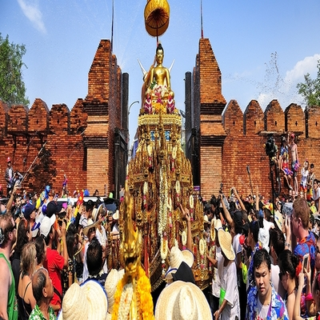
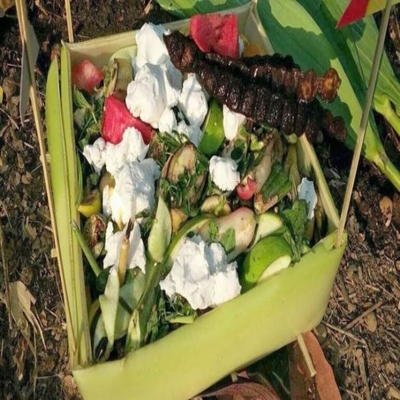

ปี๋ใหม่เมือง
ประวัติ
ประเพณีสงกรานต์ เป็นประเพณีสำคัญของชาวเหนือ หรือชาวล้านนา อันสืบเนื่องมากจากอดีตกาลที่จะยึดถือเป็นช่วงเปลี่ยนศักราชใหม่ โดยกำหนดจุดที่พระอาทิตย์ย้ายจากราศีมีนเข้าสู่ราศีเมษ ซึ่งมักจะตรงกับวันที่ 13 เมษายน หรือ14 เมษายนของแต่ละปี อย่างไรก็ตามประเพณีปีใหม่เมืองจะกินเวลาประมาณ 4-7 วันยาวนานกว่าสงกรานต์ของภาคอื่น ๆ โดยจะเริ่มตั้งแต่วันสังขารล่อง วันเนา วันพญาวัน วันปากปี หรือบางท้องที่ก็ไปจบที่วันปากเดือน หรือวันปากวัน

ตำนานสังขารล่อง
วันสังขานต์ล่อง ปัจจุบันถือเอาวันที่ 13 เมษายน ของทุกปีเป็นวันสังขานต์ล่อง เป็นวันแรกของกิจกรรมประเพณีปีใหม่เมือง หลังเที่ยงคืนวันที่ 13 เมษายน จะมีการจุดประทัด ยิงปืน เพื่อส่งสังขารหรือไล่สังขาร (จะถือเอาตามเวลาสังขานต์ล่องตามที่บอกในปฏิทินปี๋ใหม่เมืองในปีนั้น เช่นบอกว่าสังขานต์จะล่องเมื่อ 03 นาฬิกา 30 นาที 26 วินาที ชาวบ้านก็จะจุดปะทัดเวลานั้นถือว่าไล่สังขานต์) วันนี้สมาชิกในครอบครัวจะทำความสะอาดบ้านเรือน ทั้งบนเรือนและใต้ถุนบ้าน การทำความสะอาดเจ้าที่
วันปากปี
ความเชื่อบางประการเกี่ยวกับวันปากปี ชาวล้านนาจะกิน “แกงขนุน” หรือภาษาชาวบ้านเรียกว่า “แก๋งบ่าหนุน” กันทุกครอบครัว เพราะเชื่อว่าจะหนุนชีวิตให้เจริญก้าวหน้า ทั้งนี้เหตุผลของการทานแกงขนุนดังกล่าว อาจจะมาจากชื่อขนุน ที่มีความหมายถึงการเกื้อหนุน ค้ำจุน ครอบครัวให้เจริญรุ่งเรืองหรือตลอดปีของคนล้านนา และในตอนเย็นในบางพื้นที่ (บางพื้นที่อาจไม่กระทำ) จะมีการขึ้นต๊าวตังสี่หรือท้าวทั้งสี่ (เทพสี่องค์อันหมายถึงท้าวจตุโลกบาลซึ่งปกครองรักษาในทิศทั้งสี่) มีลักษณะเป็นเสามีไม้ขัดกันเป็นสี่มุม